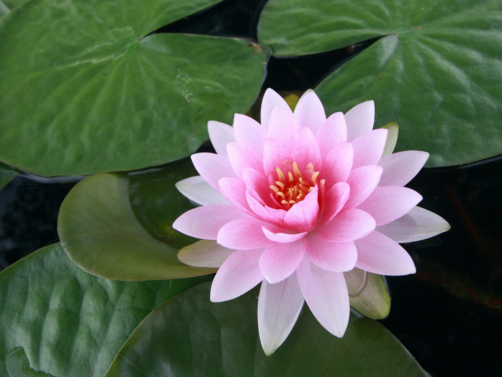

CyberLotus Precision Plant Environment System
System Status: Online | Location: Sagres, Portugal | Ambient: 23°C, 70% RH
Automatic Setup

Not configured
Base conditions: 23°C air/water, 70% relative humidity (Sagres coastal climate)
Manual Configuration
1. Environment Type
-
Hydroponic clay pebbles adjust function based on water level
2. Climate Conditions
(ambient: 23°C)
(ambient: 23°C)
(ambient: 70%)
Not set
System can only heat (not cool) from ambient Sagres conditions
3. Nutrient Solution
-
EC measurements approximate NPK values
4. Lighting Schedule
-
5. Special Functions
Bacteria is essential for aquatic plant root health